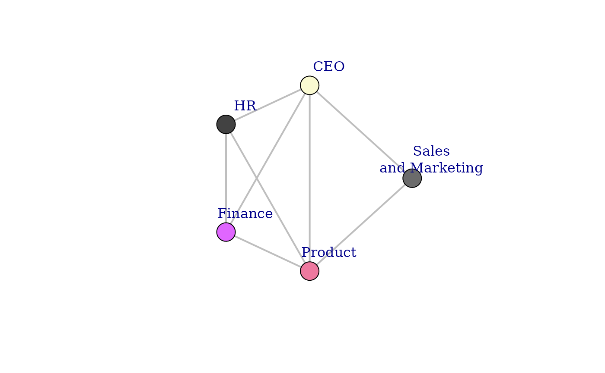
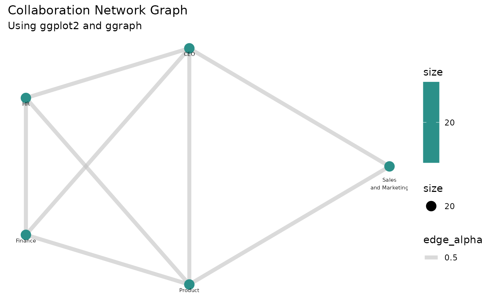

Plotting a Network Graph using network_g2g
2025-05-27
Source:vignettes/custom-network-g2g.Rmd
custom-network-g2g.RmdThis script demonstrates how to generate and visualize a network graph using the network_g2g function. The function creates an igraph object, which can be plotted to display connections between organizations based on collaboration metrics.
Step 1: load libraries and sample data
In this example, we will use the sample g2g_data dataset
from the vivainsights package. We will also use
dplyr and purrr for data manipulation
and iteration respectively, as well as the igraph
package for network graph creation and visualization.
library(vivainsights)
library(dplyr)
library(igraph)
library(ggplot2)
library(ggraph)
library(RColorBrewer)
# Display the first few rows of the dataset
head(g2g_data)## # A tibble: 6 × 11
## PrimaryCollaborator_Organization PrimaryCollaborator_…¹ SecondaryCollaborato…²
## <chr> <dbl> <chr>
## 1 Sales and Marketing 137 HR
## 2 Sales and Marketing 137 Unclassified Collabor…
## 3 Sales and Marketing 137 CEO
## 4 Sales and Marketing 137 Within Group
## 5 Sales and Marketing 137 Product
## 6 Sales and Marketing 137 Finance
## # ℹ abbreviated names: ¹PrimaryCollaborator_GroupSize,
## # ²SecondaryCollaborator_Organization
## # ℹ 8 more variables: SecondaryCollaborator_GroupSize <dbl>, MetricDate <chr>,
## # Percent_Group_collaboration_time_invested <dbl>,
## # Group_collaboration_time_invested <dbl>, Group_email_sent_count <dbl>,
## # Group_email_time_invested <dbl>, Group_meeting_count <dbl>,
## # Group_meeting_time_invested <dbl>Step 2: Generate the igraph network object
The network_g2g() function constructs a network graph
based on collaboration data. We set:
-
primaryandsecondaryto define the connection points -
metricto specify the weight of relationships -
return = "network"to get an igraph object
g <- network_g2g(
data = g2g_data,
primary = "PrimaryCollaborator_Organization",
secondary = "SecondaryCollaborator_Organization",
metric = "Group_meeting_time_invested",
return = "network"
)Step 3: Prepare and customize the graph for visualization
Before plotting, we refine the graph by:
- Removing
loops(self-connections) andmultiple edges(redundant links) - Setting vertex sizes based on the “org_size” attribute
- Defining a layout using
Multidimensional Scaling (MDS)
# Simplify the graph (remove redundant edges and self-loops)
g <- simplify(g, remove.multiple = TRUE, remove.loops = TRUE)
# Scale node size based on organizational size
V(g)$size <- V(g)$org_size
# Generate the MDS layout for better visual clarity
layout_mds <- layout_with_mds(g)Step 4: Customize and plot the network graph
We set vertex and edge properties for better readability:
-
Vertex color→ blue -
Edge color→ grey -
Vertex labels→ organization names -
Edge width→ fixed at 2 for clarity -
Transparency (alpha)for edges (adjusted manually)
# Example: Assign colors based on an attribute (assuming 'group' exists in V(g))
unique_groups <- unique(V(g)$group)
color_palette <- rainbow(length(unique_groups)) # Generate distinct colors
# Assign colors based on group
vertex_color <- color_palette[as.numeric(factor(V(g)$group))]
# Use a color gradient from the 'Blues' palette
vertex_color <- colorRampPalette(brewer.pal(9, "Blues"))(length(V(g)))
# Assign colors based on scaled size values
vertex_color <- vertex_color[rank(V(g)$size)]
set.seed(123) # For reproducibility
vertex_color <- sample(colors(), length(V(g)), replace = TRUE)
# Define vertex and edge attributes
#vertex_color <- "blue" # Set all vertices to blue
edge_color <- "grey" # Set all edges to grey
vertex_labels <- V(g)$name # Use vertex names as labels
# Plot the graph with customized settings
plot(
g,
layout = layout_mds, # Use the MDS layout
vertex.color = vertex_color, # Set vertex colors
vertex.label = vertex_labels, # Assign labels
vertex.frame.color = "black", # Define frame color for vertices
vertex.size = V(g)$size, # Scale vertex size
edge.color = edge_color, # Set edge colors
edge.width = 2, # Define edge width
edge.alpha = 0.5, # Adjust transparency (workaround)
vertex.label.dist = 4 # Control label positioning
)
Step 5: Visualizing the Network Graph using
ggplot2
Instead of using the base plot() function, we can leverage
ggplot2 along with ggraph for a more refined
and customizable visualization.
# Convert the igraph object into a dataframe for plotting
edges_df <- as_data_frame(g, what = "edges")
vertices_df <- as_data_frame(g, what = "vertices")
# Generate Layout (MDS)
layout_mds <- layout_with_mds(g)
vertices_df$x <- layout_mds[, 1]
vertices_df$y <- layout_mds[, 2]
vertices_df$color <- viridis::viridis(n = nrow(vertices_df), option = "C")
ggraph(g, layout = "mds") +
geom_edge_link(aes(edge_alpha = 0.5), color = "grey", width = 2) +
geom_node_point(aes(size = size, color = size)) +
geom_node_text(aes(label = name), vjust = 2, size = 2) +
scale_color_viridis_c() +
theme_minimal() +
labs(title = "Collaboration Network Graph", subtitle = "Using ggplot2 and ggraph") +
theme(panel.grid = element_blank(),
axis.title = element_blank(),
axis.text = element_blank(),
axis.ticks = element_blank())
This final plot displays a network of collaborations based on the meeting time invested between different organizations.